<!doctype html>
<html lang="ro">
<head>
<meta charset="utf-8">
<meta name="viewport" content="width=device-width, initial-scale=1, viewport-fit=cover">
<title>Misiunea Ordine</title>
<meta name="description" content="Lecție-joc pentru clasa a V-a: rolul sistemului de operare, elementele de interfață, fișiere și directoare, operații cu fișiere și ordinea în resursele digitale personale.">
<link rel="preconnect" href="https://fonts.googleapis.com">
<link rel="preconnect" href="https://fonts.gstatic.com" crossorigin>
<link rel="stylesheet" href="https://fonts.googleapis.com/css2?family=Rubik:wght@600;800&family=Noto+Sans:ital,wght@0,400;0,600;0,700;1,400&family=Cousine:wght@400;700&display=swap&subset=latin-ext">
<link rel="stylesheet" href="../_motor/motor.css">
<style>
:root{
  --desk:#EEF2F7; --paper:#FFFFFF; --paper2:#F2F6FB; --line:#D2DBE6;
  --ink:#172233; --ink2:#566476; --accent:#0B5CAD; --accentInk:#FFFFFF; --sel:#CCE4FF;
  --mark:#FFE08A; --markInk:#172233; --ok:#23784A; --okbg:#E0F2E7; --bad:#B83A30; --badbg:#FBE6E3;
  --fd:"Rubik","Segoe UI",system-ui,sans-serif; --fb:"Noto Sans","Segoe UI",system-ui,sans-serif; --fm:"Cousine",Consolas,monospace;
  --folder:#F2C14E; --folder2:#E0A92E;
}
@media (prefers-color-scheme:dark){:root:not([data-theme="light"]){
  --desk:#0F141C; --paper:#171E29; --paper2:#1F2835; --line:#2F3B4C;
  --ink:#E5ECF5; --ink2:#A1AFC2; --accent:#7DB8F5; --accentInk:#0F141C; --sel:#1E3A5C;
  --mark:#EDCB63; --markInk:#172233; --ok:#6CCB8F; --okbg:#18301F; --bad:#FF877B; --badbg:#3A1E1B;
  --folder:#E8B846; --folder2:#C99422;
}}
:root[data-theme="dark"]{
  --desk:#0F141C; --paper:#171E29; --paper2:#1F2835; --line:#2F3B4C;
  --ink:#E5ECF5; --ink2:#A1AFC2; --accent:#7DB8F5; --accentInk:#0F141C; --sel:#1E3A5C;
  --mark:#EDCB63; --markInk:#172233; --ok:#6CCB8F; --okbg:#18301F; --bad:#FF877B; --badbg:#3A1E1B;
  --folder:#E8B846; --folder2:#C99422;
}
/* tema jocului: bara de adresă din Explorer, cu dosarul galben și calea până la folderul elevului */
.banda{display:flex;align-items:center;gap:8px;padding:7px 12px;white-space:nowrap;overflow:hidden}
.dosar{flex:none;position:relative;width:20px;height:14px;background:var(--folder);border-radius:1px 3px 3px 3px;margin-top:3px}
.dosar::before{content:"";position:absolute;left:0;top:-4px;width:9px;height:5px;background:var(--folder2);border-radius:2px 2px 0 0}
.cale{flex:1 1 auto;min-width:0;overflow:hidden;text-overflow:ellipsis;font-family:var(--fm);font-size:.74rem;color:var(--ink2);background:var(--paper);border:1px solid var(--line);border-radius:4px;padding:2px 10px}
.cale b{color:var(--ink);font-weight:700}
.cale i{font-style:normal;color:var(--accent);padding:0 4px}
h1 .fol{display:inline-block;width:.62em;height:.42em;background:var(--folder);border-radius:1px 3px 3px 3px;margin-left:.2em;vertical-align:.06em;position:relative}
.hunt .tk{text-align:left}
</style>
</head>
<body>
<script src="../_motor/motor.js"></script>
<script>
const LEVELS=[
{t:'Șeful din calculator',lectii:[8],continuturi:['Rolul unui sistem de operare'],text:`
<p>Calculatorul are nevoie de un program care să pornească totul și să țină ordinea. Acesta este <mark>sistemul de operare</mark>.</p>
<p>El face legătura dintre tine, programe și părțile calculatorului (<mark>hardware</mark>). Pornește calculatorul. Deschide și închide aplicațiile. Păstrează fișierele pe disc. Face ca tastatura, mouse-ul, ecranul și imprimanta să lucreze împreună.</p>
<p>Exemple: <strong>Windows</strong>, <strong>macOS</strong> și <strong>Linux</strong> pe calculatoare, <strong>Android</strong> și <strong>iOS</strong> pe telefoane și tablete.</p>
<figure class="captura"><a href="../fisiere-v/img/sistem-despre.webp" target="_blank">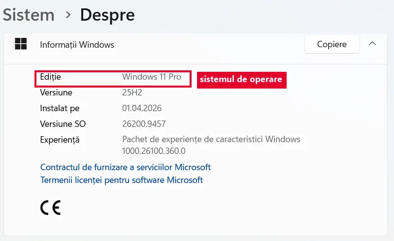</a>
<figcaption>Vrei să afli ce sistem de operare ai? <b>Setări → Sistem → Despre</b>. Aici scrie <b>Windows 11 Pro</b>.</figcaption></figure>
<p>Word, Paint sau un joc sunt <mark>aplicații</mark>. Ele funcționează doar peste un sistem de operare.</p>
<figure class="captura"><a href="../fisiere-v/img/aplicatie-peste-desktop.webp" target="_blank">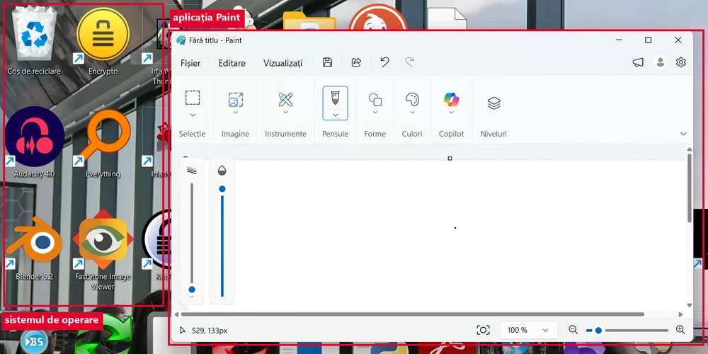</a>
<figcaption>Dedesubt e <b>sistemul de operare</b> (desktopul Windows). Deasupra lui s-a deschis o <b>aplicație</b>: Paint.</figcaption></figure>`,
qs:[
 {t:'tf',q:'Paint, aplicația de desen, pornește calculatorul și le conduce pe toate celelalte programe.',ok:false,why:'Fals. Paint este o aplicație pentru desen. Ea funcționează peste Windows, care este sistemul de operare.'},
 {t:'classify',q:'Cine conduce tot dispozitivul și cine face un singur fel de treabă?',cats:['Sistem de operare','Aplicație'],items:[['Windows',0],['Android',0],['Linux',0],['Paint',1],['Word',1],['Minecraft',1]],why:'Sistemul de operare conduce tot dispozitivul. Aplicațiile fac un singur fel de treabă (desen, text, joc) și au nevoie de el ca să pornească.'},
 {t:'choice',q:'Telefonul Ioanei are Android. Ce este Android?',o:['Sistemul de operare al telefonului','O aplicație de jocuri','Un tip de procesor','Un browser'],ok:0,why:'Android pornește telefonul și le conduce pe toate celelalte programe, la fel cum face Windows pe calculator. Procesorul e o piesă, iar browserul e o aplicație.'},
 {t:'match',q:'Leagă fiecare lucru de ce face sistemul de operare cu el.',pairs:[['Aplicațiile','le deschide și le închide'],['Fișierele','le păstrează în ordine pe disc'],['Mouse-ul și imprimanta','le face să lucreze cu calculatorul'],['Tu, utilizatorul','primește comenzile tale prin ferestre și pictograme']],why:'Sistemul de operare stă la mijloc: între tine, programe și piesele calculatorului.'},
 {t:'choice',q:'Ce se întâmplă cu Word dacă de pe calculator lipsește sistemul de operare?',o:['Word nu poate porni','Word pornește mai repede','Word funcționează la fel','Word devine sistem de operare'],ok:0,why:'Word folosește sistemul de operare ca să deschidă fișiere, să afișeze pe ecran și să primească literele de la tastatură. Fără el nu are cum să pornească.'}
]},
{t:'Ce vezi pe ecran',lectii:[8],continuturi:['Elemente de interfață ale unui sistem de operare'],text:`
<p>Ce vezi pe ecran după pornire este <mark>interfața</mark> sistemului de operare. În Windows ai:</p>
<ul>
<li><mark>desktopul</mark> (suprafața de lucru), cu <mark>pictograme</mark>: imagini mici pentru programe, fișiere și foldere;</li>
<li><strong>butonul Start</strong>, de unde pornești aplicațiile;</li>
<li><mark>bara de activități</mark>, jos, cu programele deschise;</li>
<li><strong>Coșul de reciclare</strong>, unde ajung fișierele șterse.</li>
</ul>
<figure class="captura"><a href="../fisiere-v/img/desktop-pictograme.webp" target="_blank">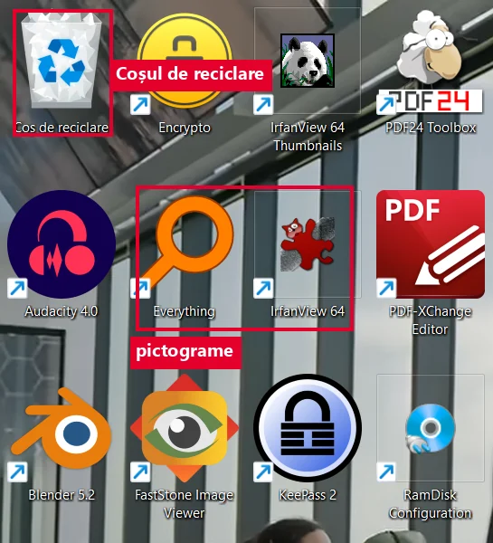</a>
<figcaption>Desktopul, cu <b>pictograme</b>. Prima din colț e <b>Coșul de reciclare</b>.</figcaption></figure>
<figure class="captura"><a href="../fisiere-v/img/bara-activitati.webp" target="_blank">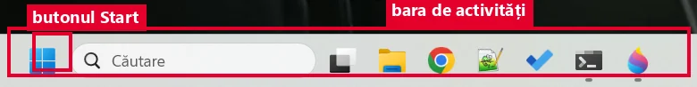</a>
<figcaption>Jos stă <b>bara de activități</b>, iar la începutul ei e <b>butonul Start</b>.</figcaption></figure>
<p>Fiecare program se deschide într-o <mark>fereastră</mark>. Sus, în dreapta, ea are trei butoane: <strong>minimizare</strong> (—) o ascunde în bara de activități, <strong>maximizare</strong> (☐) o face cât tot ecranul, iar <strong>închidere</strong> (✕) o închide.</p>
<figure class="captura"><a href="../fisiere-v/img/butoane-fereastra.webp" target="_blank">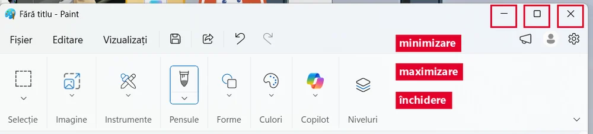</a>
<figcaption>Cele trei butoane, în colțul din dreapta sus al oricărei ferestre.</figcaption></figure>`,
qs:[
 {t:'tf',q:'Butonul de minimizare închide programul, iar ce ai lucrat se pierde.',ok:false,why:'Fals. Minimizarea doar ascunde fereastra în bara de activități. Programul merge mai departe. Dai clic pe el în bară și fereastra revine.'},
 {t:'match',q:'Leagă fiecare element de rolul lui.',pairs:[['Butonul Start','de aici pornești aplicațiile'],['Bara de activități','arată programele deschise'],['Pictograma','o imagine mică pentru un program sau un fișier'],['Coșul de reciclare','aici ajung fișierele șterse']],why:'Acestea sunt „butoanele” prin care vorbești cu sistemul de operare.'},
 {t:'choice',q:'Vrei ca fereastra cu Paint să ocupe tot ecranul. Ce buton apeși?',o:['Maximizare','Minimizare','Închidere'],ok:0,why:'Maximizarea mărește fereastra cât tot ecranul. Minimizarea o ascunde, iar închiderea oprește programul.'},
 {t:'classify',q:'Unde găsești fiecare lucru?',cats:['Pe desktop','În bara de activități','Sus, pe fereastră'],items:[['Pictograma Coșului de reciclare',0],['Pictogramele fișierelor salvate pe desktop',0],['Butonul Start',1],['Programele deschise acum',1],['Butonul de închidere ✕',2],['Butonul de minimizare —',2]],why:'Desktopul ține pictograme. Bara de activități ține Start și programele pornite. Butoanele unei ferestre stau pe fereastra ei.'},
 {t:'order',q:'Pornești aplicația Paint. Pune pașii în ordine.',items:['Apeși butonul Start','Cauți Paint în lista de aplicații','Dai clic pe Paint','Paint se deschide într-o fereastră'],why:'Start e ușa spre aplicații. Găsești aplicația, o alegi, iar sistemul de operare o deschide într-o fereastră.'}
]},
{t:'Fișiere și foldere',lectii:[9],continuturi:['Organizarea datelor pe suport extern'],text:`
<p>Tot ce salvezi stă pe un <mark>suport de stocare</mark>: discul calculatorului, un stick USB sau un card. Acolo informațiile stau în <mark>fișiere</mark>.</p>
<p>Un fișier are un <mark>nume</mark> și, după punct, o <mark>extensie</mark>: <code>tema.docx</code>, <code>pisica.jpg</code>, <code>cantec.mp3</code>. Extensia arată tipul fișierului și cu ce aplicație se deschide.</p>
<figure class="captura"><a href="../fisiere-v/img/explorer-fisiere.webp" target="_blank">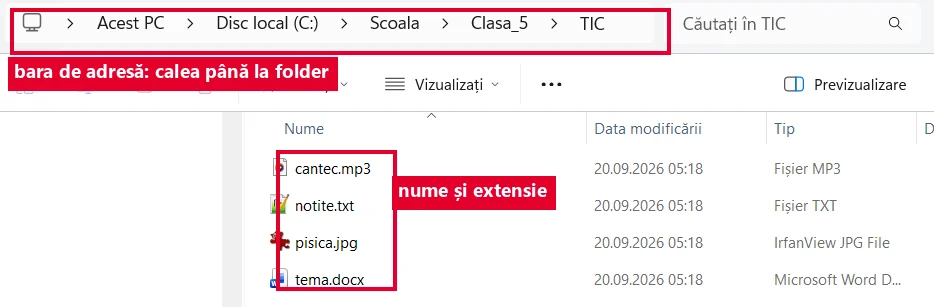</a>
<figcaption>Patru fișiere în folderul TIC. După punct e <b>extensia</b>, iar coloana <b>Tip</b> spune același lucru în cuvinte.</figcaption></figure>
<p>Fișierele se pun în <mark>directoare</mark>, numite și foldere sau dosare. Un folder poate avea în el fișiere și alte foldere. Așa se formează un <mark>arbore</mark>.</p>
<figure class="captura"><a href="../fisiere-v/img/explorer-arbore.webp" target="_blank">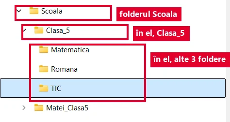</a>
<figcaption><b>Arborele</b> din stânga ferestrei Explorer: folder în folder.</figcaption></figure>
<p>Drumul până la un fișier se numește <mark>cale</mark>: <code>C:\\Scoala\\Clasa_5\\TIC\\tema.docx</code>. <code>C:</code> este discul, apoi vin folderele, iar la final fișierul.</p>
<figure class="captura"><a href="../fisiere-v/img/cale-text.webp" target="_blank">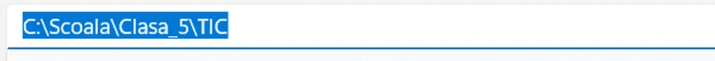</a>
<figcaption>Aceeași cale, scrisă ca text în <b>bara de adresă</b> (apeși <kbd>Ctrl</kbd>+<kbd>L</kbd> și o vezi întreagă).</figcaption></figure>`,
qs:[
 {t:'choice',q:'Ce arată extensia <code>.mp3</code> din numele <code>cantec.mp3</code>?',o:['Că fișierul este un sunet','Că fișierul durează 3 minute','Că e al treilea cântec din folder','Că fișierul este un folder'],ok:0,why:'Extensia spune tipul fișierului. .mp3 înseamnă sunet (audio), deci se deschide cu un program care redă muzică.'},
 {t:'classify',q:'Ce fel de fișier este?',cats:['Document text','Imagine','Sunet'],items:[['referat.docx',0],['notite.txt',0],['vacanta.jpg',1],['desen.png',1],['melodie.mp3',2],['inregistrare.wav',2]],why:'Te uiți după punct: .docx și .txt sunt texte, .jpg și .png sunt imagini, .mp3 și .wav sunt sunete.'},
 {t:'tf',q:'Un folder poate conține fișiere și, în același timp, alte foldere.',ok:true,why:'Adevărat. Folderele se pot pune unele în altele. Așa se face arborele: Scoala, în el Clasa_5, în el TIC.'},
 {t:'choice',q:'În calea <code>C:\\Scoala\\Clasa_5\\TIC\\tema.docx</code>, în ce folder stă direct fișierul?',o:['TIC','Clasa_5','Scoala','C:'],ok:0,why:'Fișierul e în folderul scris chiar înaintea lui. TIC e în Clasa_5, iar Clasa_5 e în Scoala.'},
 {t:'order',q:'Pune în ordine părțile căii, de la disc până la fișier.',items:['C:','Scoala','Clasa_5','TIC','tema.docx'],why:'Calea pornește de la disc, trece prin fiecare folder, de la cel mai mare la cel mai mic, și se termină cu fișierul.'}
]},
{t:'Creez și redenumesc',lectii:[10],continuturi:['Operații cu fișiere și directoare'],text:`
<p>Cu fișierele lucrezi în <mark>Explorer</mark> (<em>File Explorer</em>), programul din Windows care îți arată folderele.</p>
<p><mark>Folder nou:</mark> clic dreapta pe un loc gol, apoi <strong>Nou</strong> și <strong>Folder</strong>. Sau apeși <kbd>Ctrl</kbd>+<kbd>Shift</kbd>+<kbd>N</kbd>.</p>
<figure class="captura"><a href="../fisiere-v/img/meniu-nou-folder.webp" target="_blank">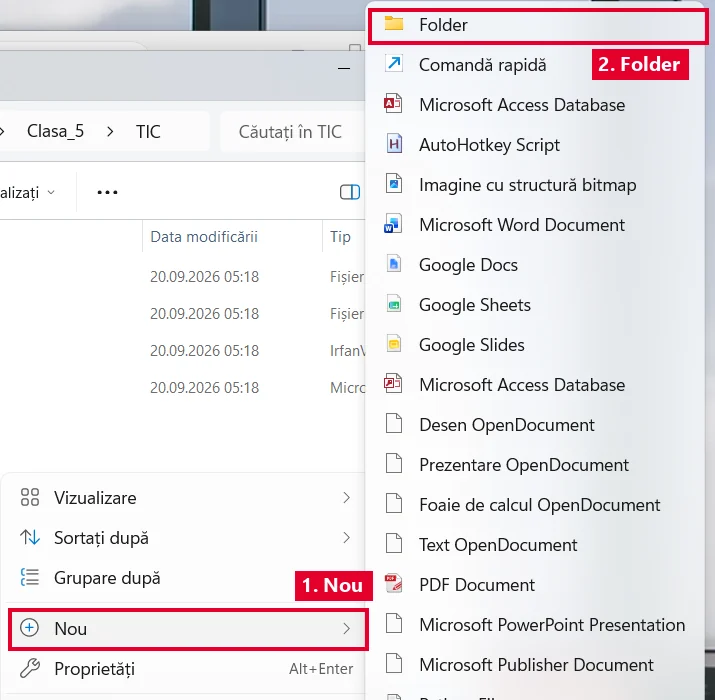</a>
<figcaption>Clic dreapta pe un loc gol → <b>Nou</b> → <b>Folder</b>.</figcaption></figure>
<p><mark>Redenumire:</mark> selectezi fișierul, apeși <kbd>F2</kbd> (sau clic dreapta și Redenumire), scrii numele și apeși <kbd>Enter</kbd>.</p>
<figure class="captura"><a href="../fisiere-v/img/redenumire-f2.webp" target="_blank">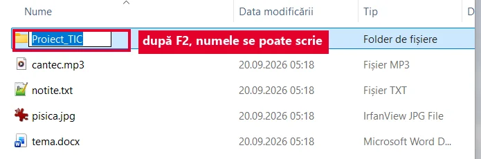</a>
<figcaption>După <kbd>F2</kbd>, numele intră într-o casetă și se poate scrie peste el.</figcaption></figure>
<p>Un nume bun e scurt și clar: <code>Popescu_Ana_tema1.docx</code>. În nume nu ai voie să folosești semnele <code>\\ / : * ? " &lt; &gt; |</code>. În același folder nu pot sta două fișiere cu exact același nume.</p>
<figure class="captura"><a href="../fisiere-v/img/nume-interzis.webp" target="_blank">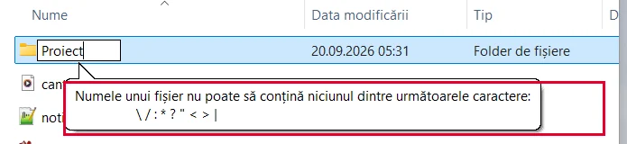</a>
<figcaption>Dacă scrii un semn interzis, Windows te oprește chiar atunci și îți arată lista.</figcaption></figure>
<p><mark>Nu schimbi extensia.</mark> Dacă scrii <code>tema.jpg</code> în loc de <code>tema.docx</code>, fișierul nu devine imagine și s-ar putea să nu se mai deschidă.</p>`,
qs:[
 {t:'choice',q:'Ce tastă apeși ca să redenumești fișierul selectat?',o:['F2','F5','Delete','Esc'],ok:0,why:'F2 face numele fișierului gata de scris. F5 doar reîmprospătează fereastra, iar Delete șterge fișierul.'},
 {t:'classify',q:'Nume permis sau nepermis în Windows?',cats:['Permis','Nepermis'],items:[['tema_1.docx',0],['Excursie 2027.jpg',0],['Ana-Maria_proiect.pptx',0],['tema?.docx',1],['mate/geo.txt',1],['desen:final.png',1]],why:'Spațiul, liniuța și linia de jos sunt permise. Semnele ? / și : sunt interzise, fiindcă Windows le folosește la altceva, de exemplu / și : apar în căi.'},
 {t:'tf',q:'Dacă redenumești <code>poza.jpg</code> în <code>poza.mp3</code>, poza devine un cântec.',ok:false,why:'Fals. Conținutul fișierului rămâne tot o imagine. Se schimbă doar eticheta, iar calculatorul încearcă să-l deschidă cu un program greșit.'},
 {t:'order',q:'Creezi cu mouse-ul folderul „Proiect_TIC”. Pune pașii în ordine.',items:['Deschizi Explorer și intri în folderul potrivit','Dai clic dreapta pe un loc gol','Alegi Nou, apoi Folder','Scrii „Proiect_TIC” și apeși Enter'],why:'Întâi alegi locul, apoi ceri folderul nou din meniu, iar la final îi dai numele.'},
 {t:'choice',q:'Care nume e cel mai bun pentru tema a doua la română a Mariei Ionescu?',o:['Ionescu_Maria_romana_tema2.docx','Document Microsoft Word (3).docx','tema_noua_finala_final2.docx','Maria_tema.docx'],ok:0,why:'Numele bun spune cine, ce materie și care temă. Celelalte nu spun nimic, iar peste o lună nu mai știi ce e în ele.'}
]},
{t:'Copiez, mut, șterg, caut',lectii:[10],continuturi:['Operații cu fișiere și directoare'],text:`
<p><mark>Copierea</mark>: <kbd>Ctrl</kbd>+<kbd>C</kbd>, apoi <kbd>Ctrl</kbd>+<kbd>V</kbd> în folderul nou. Originalul rămâne pe loc și apare încă un exemplar.</p>
<p><mark>Mutarea</mark>: <kbd>Ctrl</kbd>+<kbd>X</kbd>, apoi <kbd>Ctrl</kbd>+<kbd>V</kbd>. Fișierul pleacă din locul vechi și ajunge în folderul nou.</p>
<p><mark>Ștergerea</mark> cu <kbd>Delete</kbd> trimite fișierul în <strong>Coșul de reciclare</strong>. De acolo îl poți <strong>restaura</strong>. <kbd>Shift</kbd>+<kbd>Delete</kbd> șterge definitiv. Atenție: ce ștergi de pe un stick USB nu trece prin Coș.</p>
<figure class="captura"><a href="../fisiere-v/img/cos-restaurare.webp" target="_blank">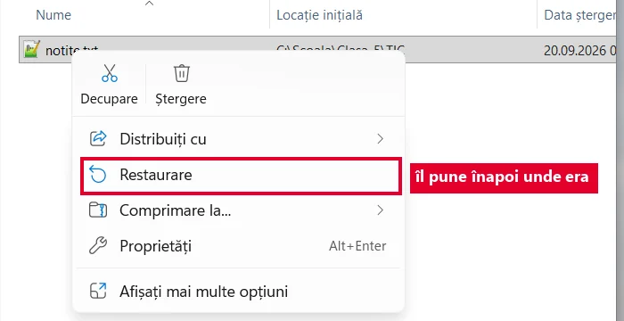</a>
<figcaption>În Coș, fișierul își ține minte <b>locația inițială</b>. Clic dreapta → <b>Restaurare</b> îl pune înapoi acolo.</figcaption></figure>
<p>Nu știi unde e un fișier? Scrii o parte din nume în caseta de <mark>căutare</mark> din Explorer.</p>
<figure class="captura"><a href="../fisiere-v/img/cautare-explorer.webp" target="_blank">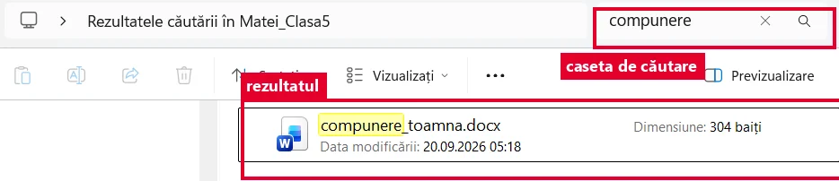</a>
<figcaption>Ajunge o parte din nume: <code>compunere</code> a găsit fișierul.</figcaption></figure>`,
qs:[
 {t:'tf',q:'După <kbd>Ctrl</kbd>+<kbd>X</kbd> și <kbd>Ctrl</kbd>+<kbd>V</kbd>, fișierul rămâne și în folderul vechi.',ok:false,why:'Fals. Așa se face mutarea: fișierul pleacă din locul vechi. Rămâne în ambele locuri doar la copiere (Ctrl+C).'},
 {t:'match',q:'Leagă fiecare comandă de ce se întâmplă cu fișierul.',pairs:[['Ctrl+C, apoi Ctrl+V','se copiază, originalul rămâne pe loc'],['Ctrl+X, apoi Ctrl+V','se mută în folderul nou'],['Delete','ajunge în Coșul de reciclare'],['Shift+Delete','se șterge definitiv']],why:'Două întrebări fac diferența: rămâne originalul? Îl mai pot lua înapoi?'},
 {t:'choice',q:'Ai șters din greșeală, cu tasta Delete, tema de pe desktop. Ce faci?',o:['O cauți în Coșul de reciclare și o restaurezi','Apeși Shift+Delete, ca s-o aduci înapoi','Golești Coșul de reciclare și o cauți din nou','Repornești calculatorul și aștepți să reapară'],ok:0,why:'Delete a trimis tema în Coș. Restaurarea o pune înapoi unde era. Golirea Coșului ar șterge-o definitiv.'},
 {t:'choice',q:'Vrei să duci tema acasă pe stick, dar să rămână și pe calculatorul școlii. Ce operație faci?',o:['Copiere','Mutare','Ștergere','Redenumire'],ok:0,why:'Doar copierea lasă fișierul în ambele locuri. La mutare ar dispărea de pe calculatorul școlii.'},
 {t:'tf',q:'Un fișier șters cu Delete de pe un stick USB poate fi luat înapoi din Coșul de reciclare.',ok:false,why:'Fals. De pe stick, Windows șterge definitiv, fără Coș. De aceea citești de două ori mesajul înainte să confirmi.'}
]},
{t:'Ordine în fișierele lui Matei',final:true,lectii:[11],continuturi:['Organizarea datelor pe suport extern','Operații cu fișiere și directoare'],text:`
<p><strong>Misiunea finală.</strong> Pe desktopul lui Matei sunt 30 de fișiere amestecate: teme, poze din excursie, cântece. Nu mai găsește nimic.</p>
<p>Îl ajuți să facă ordine. Face un folder principal, <code>Matei_Clasa5</code>, iar în el foldere pe materii și unul pentru poze. Fiecare fișier primește un nume clar și ajunge în folderul lui. Ce nu mai trebuie se șterge, dar numai după ce verifică.</p>
<figure class="captura"><a href="../fisiere-v/img/structura-matei.webp" target="_blank">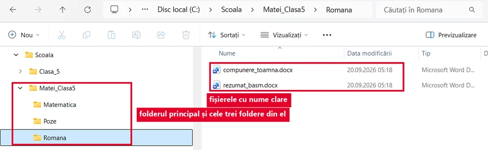</a>
<figcaption>Așa arată ordinea la final: un folder principal, trei foldere în el și fișiere cu nume care spun ce sunt.</figcaption></figure>
<p>Ce e important păstrează și într-o <mark>copie de siguranță</mark>, de exemplu pe un stick.</p>`,
qs:[
 {t:'classify',q:'În ce folder muți fiecare fișier?',cats:['Matematica','Romana','Poze'],items:[['exercitii_fractii.docx',0],['problema_perimetru.docx',0],['compunere_toamna.docx',1],['rezumat_basm.docx',1],['excursie_Bicaz_1.jpg',2],['excursie_Bicaz_2.jpg',2]],why:'Numele clare îți spun singure unde merge fișierul. De aceea redenumirea ajută la ordine.'},
 {t:'order',q:'Pune în ordine pașii lui Matei.',items:['Creează folderul principal Matei_Clasa5','Intră în el și creează folderele Matematica, Romana și Poze','Mută fiecare fișier în folderul lui','Verifică dacă pe desktop a mai rămas ceva'],why:'Un fișier nu poate fi mutat într-un folder care încă nu există. Verificarea de la final îți arată ce ai uitat.'},
 {t:'hunt',q:'Planul lui Matei are 3 greșeli. Apasă pe ele.',src:'Fac folderul Matei_Clasa5, iar în el folderele Matematica, Romana și Poze. [[Tema la mate o numesc document1|numele nu spune ce e în fișier; mai bine fractii_tema1]]. Pozele din excursie le mut în Poze. [[Șterg cu Shift+Delete tot ce nu recunosc|Shift+Delete șterge definitiv; întâi verifici, apoi ștergi cu Delete, ca să poți restaura]]. [[Schimb extensia compunerii din .docx în .jpg|extensia nu se schimbă; fișierul nu devine imagine și s-ar putea să nu se mai deschidă]], ca s-o țin lângă poze.',indiciu:'Uită-te la nume, la ștergere și la extensie.',why:'Folderele și mutarea pozelor sunt corecte. Greșelile strică numele, pot pierde fișiere pentru totdeauna sau le fac să nu se mai deschidă.'},
 {t:'choice',q:'Matei nu mai găsește fișierul <code>compunere_toamna.docx</code>. Care e drumul cel mai rapid?',o:['Scrie „compunere” în caseta de căutare din Explorer','Deschide pe rând fiecare folder de pe calculator','Scrie compunerea din nou','Golește Coșul de reciclare'],ok:0,why:'Căutarea verifică toate folderele în locul tău. Ajunge o parte din nume, dacă e un nume clar.'},
 {t:'tf',q:'O copie a temelor pe un stick USB te ajută dacă se strică discul calculatorului.',ok:true,why:'Adevărat. Copia de siguranță stă pe alt suport, deci nu se pierde odată cu discul.'}
]}
];

JocMotor.porneste({
  cheie:'joc_fisiere_v',
  titlu:'Misiunea Ordine',
  marca:'Misiunea <b>Ordine</b>',
  h1:'Misiunea Ordine<span class="fol"></span>',
  clasa:'a V-a',
  unitate:'V-U2',
  unitateTitlu:'Sistemul de operare. Ordinea în fișierele mele',
  competente:['CS.1.2'],
  lectii:'8–11',
  intro:'Șase niveluri despre sistemul de operare și fișierele tale: ce face sistemul de operare, ce vezi pe ecran, fișiere și foldere, creare, redenumire, copiere, mutare, ștergere și căutare. La fiecare nivel citești o pagină scurtă și răspunzi la întrebări. La final faci ordine în fișierele lui Matei și îți iei diploma.',
  banda:'<span class="dosar"></span><span class="cale">Acest PC<i>›</i>Documente<i>›</i>Clasa_5<i>›</i><b>TIC</b></span>',
  nivele:LEVELS,
  diploma:{
    titlu:'Stăpânul folderelor',
    rezumat:'rolul sistemului de operare, desktopul, bara de activități și ferestrele, fișiere, extensii, foldere și căi, creare, redenumire, copiere, mutare, ștergere și căutare',
    aplicatie:'Explorer (File Explorer), în Windows, pe calculatorul din laborator',
    provocare:[
      'Deschide Explorer și intră în Documente sau în folderul clasei, unde îți spune profesorul.',
      'Creează folderul <code>Clasa_Nume_Prenume</code>, iar în el folderele TIC, Romana și Poze.',
      'În TIC creează un document text nou (clic dreapta, Nou, Document text) și scrie-i numele <code>nota_mea</code>. Extensia <code>.txt</code> o pune Windows, deci fișierul devine <code>nota_mea.txt</code>.',
      'Copiază <code>nota_mea.txt</code> în Romana, apoi șterge copia cu Delete și restaureaz-o din Coșul de reciclare.',
      'Găsește fișierul cu ajutorul casetei de căutare din Explorer și arată-i profesorului structura folderelor.'
    ]
  }
});
</script>
</body>
</html>
